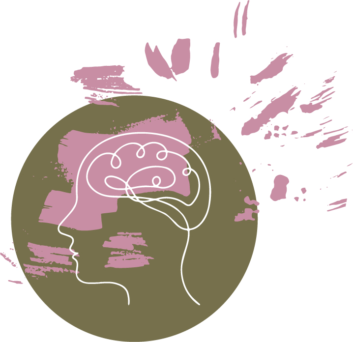

This week I certainly got stuck on some questions. The fizz buzz challenge got me stumped. This is something I have realised this week. My desire to get started, not fully understanding
the question can get me off track. I try all sorts of things, giving things a go. While this is great, I need to take a breath at the beginning,
taking my time to define what the question is asking of me, then give it a go. My attempts to make it work were enjoyable but my want to solve
the problem made it somewhat frustrating.
I used different problem-solving techniques. Firstly I wrote some pseudo-code to help define what the problem was, writing the code in plain simple language which provides a framework to breakdown
the steps required. The rubber ducky method, explaining it in simple terms, again breaking down
the problem. I realise I have been doing this method a lot, right before I go to ask someone the answer comes to me already. Googling is also a preferred
method for problem-solving, although this needs to be selective as there are so many different rabbit
holes you can go down! I am getting to understand and check the error messages more. They are extremely helpful, like little pointers to what
needs adjusting, for example I had a lot of syntax errors coming up which I could correct. Also checking in with coaches that can give advice.
When I got help, this was extremely useful. I usually have a hard time asking so am pushing myself to be more open when help is needed. Getting someone to talk
through step by step, breaking it down, helps it click for me. Console logging is wonderful as well, at different points of the code, checking what is working and
what isn’t. I used the method a lot, learning to try it in different spots to see what is happening within the code. I feel confident in my ability to use problem-solving techniques. My coding wasn't pretty this week, but I kept trying, asking
and didn’t give up.
My reflection for this week:
More daily practice coding. Also, take my time looking at the questions, it is often not as complicated as I first think.
